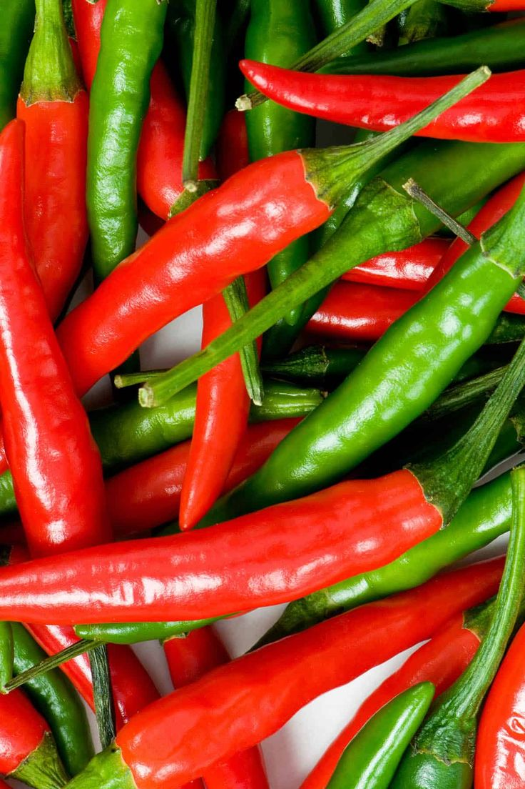

Chilli Cultivation Guide

1. Land Preparation
Plough the land 2–3 times and level properly.
Apply 10–15 tons of FYM per acre during land preparation.
Form ridges and furrows 60 cm apart for transplanting.
2. Seed Selection & Sowing
Select high-yielding and disease-resistant varieties (like Guntur, Byadgi).
Seed rate: 300–400 g per acre.
Raise seedlings in nursery beds and transplant 30–40 day old seedlings.
Spacing: 60 cm × 45 cm.
3. Water Management
Irrigate immediately after transplanting.
Maintain irrigation at 7–10 day intervals depending on soil moisture.
Avoid waterlogging to prevent root rot and wilt.
4. Fertilization Schedule
Basal dose: 12–15 tons FYM, 30 kg Nitrogen, 40 kg Phosphorus, 20 kg Potash per acre.
Top dressing: Remaining nitrogen in 2–3 splits after flowering starts.
Apply micronutrients like calcium, boron, and magnesium as needed.
5. Weed & Pest Management
Manual weeding 2–3 times or use mulching.
Major pests: Thrips, aphids, fruit borers — manage with neem oil or recommended pesticides.
Diseases: Powdery mildew, leaf curl virus — use disease-resistant varieties and fungicides.
6. Investment Breakdown (Per Acre)
Input
Estimated Cost (INR)
Seeds
₹1,500 – ₹2,500
Fertilizers
₹3,000 – ₹4,000
Pesticides/Fungicides
₹2,000 – ₹3,000
Labor
₹7,000 – ₹10,000
Irrigation
₹2,000 – ₹3,000
Total Investment
₹15,500 – ₹22,500 per acre
7. Harvesting & Yield
First harvest starts around 70–90 days after transplanting.
Harvest ripe red chillies at 10–15 day intervals.
Yield: 15–25 quintals (green) or 5–8 quintals (dry) per acre.
8. Market Rate & Profit Estimation
Dry chilli market price: ₹8,000 – ₹15,000 per quintal (varies by quality).
Gross returns: ₹40,000 – ₹1,20,000 per acre.
Net profit: ₹20,000 – ₹1,00,000 per acre.